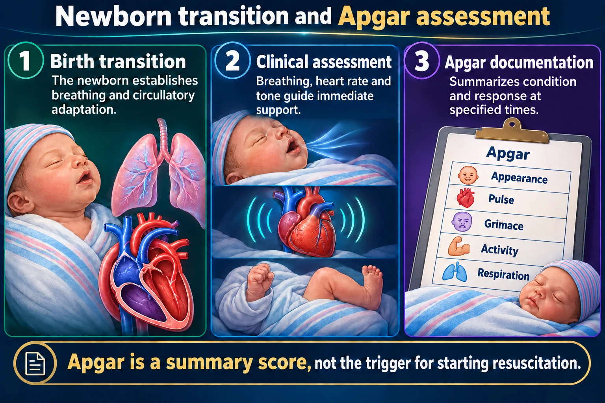
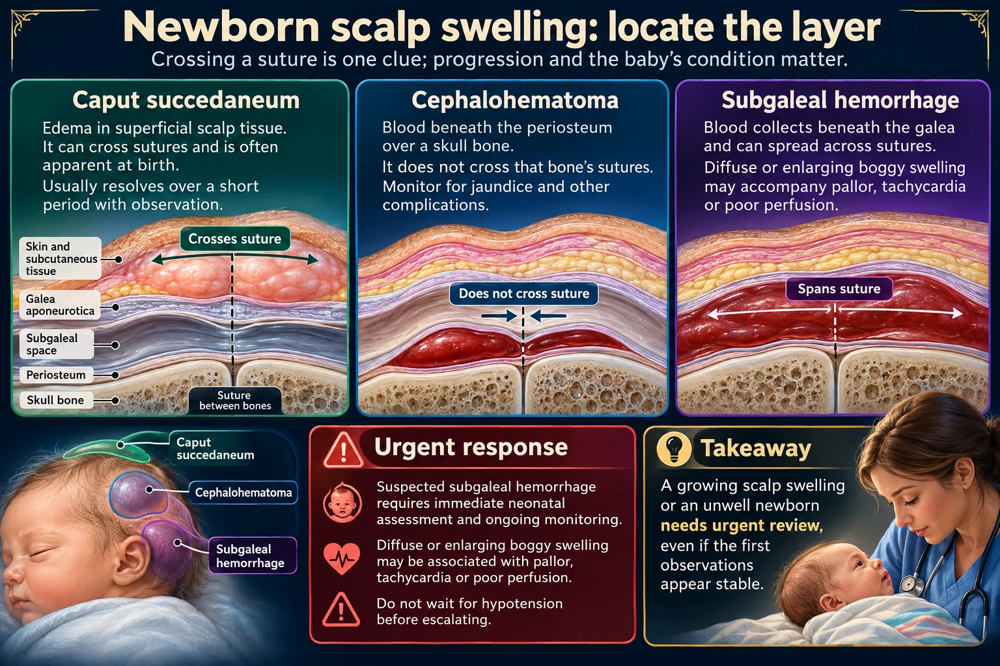

Scored at 1 and 5 minutes — but it never decides the resuscitation. Plus the normal findings that frighten parents.

Acrocyanosis is why a perfectly healthy baby scores 9 rather than 10. And the four heat-loss routes each have their own fix.
Apgar is a summary score, not the trigger for starting resuscitation.
Birth transition
The newborn establishes breathing and circulatory adaptation.
Clinical assessment
Breathing, heart rate and tone guide immediate support.
Apgar documentation
Summarizes condition and response at specified times.
Five components
Appearance, pulse, grimace, activity and respiration are scored separately.
Resuscitation
Begin indicated support based on assessment; do not wait for an Apgar score.
Ongoing care
Monitor temperature, breathing, feeding and perfusion.
| Sign | 0 | 1 | 2 |
|---|---|---|---|
| Appearance (color) | Blue or pale all over | Body pink, extremities blue | Completely pink |
| Pulse | Absent | <100 | ≥100 |
| Grimace (reflex) | No response | Grimace only | Cry, cough, sneeze |
| Activity (tone) | Limp | Some flexion | Active movement |
| Respirations | Absent | Slow, irregular, weak cry | Good strong cry |
Scored at 1 minute and again at 5 minutes.
A score describes how she is doing and how she is responding to whatever has been done — 0–3 low, 4–6 moderately abnormal, 7–10 reassuring. If the 5-minute score is below 7, keep scoring every 5 minutes up to 20 minutes.
Acrocyanosis — blue hands and feet with a pink body — is normal in the first 24–48 hours, which is why a perfectly healthy newborn commonly scores 9 rather than 10.
APGAR describes the transition. It never decides whether to start resuscitation - you do not wait a minute to act on a baby who is not breathing.
The 1-minute score reflects intrauterine conditions. The 5-minute score matters more, because it shows response to whatever was done.
At birth, ask three questions: Term? Good tone? Breathing or crying? All three yes — she stays skin-to-skin with her mother for routine care.
Effective ventilation is the most important action in newborn resuscitation. The Apgar score is recorded alongside it, never waited for.
A newborn cannot shiver. Cold stress drives up oxygen and glucose consumption, so a cold baby quickly becomes a hypoglycemic, acidotic baby.
Drying the baby immediately is one of the very first steps at birth — warm, dry, stimulate. For a baby who is not breathing, ventilation comes straight after and matters most.
| Heat loss | How | Prevent |
|---|---|---|
| Evaporation | Wet skin | Dry immediately, remove wet linen |
| Conduction | Cold surface | Pre-warm the scale, warm blankets |
| Convection | Draughts | Away from vents, doors, fans |
| Radiation | Nearby cold objects | Away from cold windows and walls |
Skin-to-skin with the mother regulates temperature better than a warmer, and supports bonding and breastfeeding at the same time. It is the preferred method for a stable newborn.

The periosteum is the answer. It is a separate wrapper around each skull bone and it is anchored at every seam, so anything trapped underneath it cannot get past the seam either. Caput sits above it, so nothing is fencing it.
A growing scalp swelling or an unwell newborn needs urgent review, even if the first observations appear stable.
Caput succedaneum
Edema in superficial scalp tissue. It can cross sutures and is often apparent at birth. Usually resolves over a short period with observation.
Cephalohematoma
Blood beneath the periosteum over a skull bone. It does not cross that bone’s sutures. Monitor for jaundice and other complications.
Subgaleal hemorrhage
Blood collects beneath the galea and can spread across sutures. Diffuse or enlarging boggy swelling may accompany pallor, tachycardia or poor perfusion.
Urgent response
Suspected subgaleal hemorrhage requires immediate neonatal assessment and ongoing monitoring. Do not wait for hypotension before escalating.
| Caput succedaneum | Cephalhematoma | |
|---|---|---|
| Crosses sutures? | YES | NO |
| Present | At birth | Appears hours later |
| Resolves | Days | Weeks |
| Jaundice risk | Low | Higher — blood breaks down |
Caput Crosses. Cephalhematoma is Contained.
Within the first 24 hours = pathological. Usually hemolytic — Rh or ABO incompatibility. Always reported.
After 24 hours, day 2–3 = usually physiological. Immature liver plus rapid breakdown of fetal red cells.
Feeding is treatment - it moves bilirubin out through the stool. Phototherapy if levels rise: protect the eyes, monitor temperature and fluid balance.
Blood in a newborn’s stool is reported promptly. It is often maternal blood swallowed at the birth or from a cracked nipple — but only the provider’s workup can say so. Assess colour, amount and consistency, how she looks and feeds, and her belly, then report.
Blood in the stool gets reported the day you see it — do not wait to see if it clears. So does no meconium at all in the first 24 hours.
These newly drawn concept diagrams consolidate the retired illustration sets. The accompanying study notes and original handout links remain on this page.